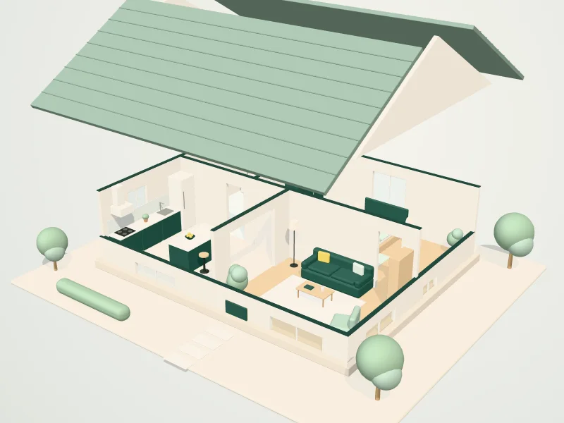

About us
A local cleaning company that does it properly
Karis Smart Cleaning is a Guildford-based cleaning company looking after homes and workplaces across Guildford, Godalming, Woking and the surrounding villages.
How we work
Good cleaning is not complicated, but it does need care and consistency. That is why every job starts with a conversation about what you want done, and a checklist we both agree on.
From there, we work through it room by room. Regular customers get the same standard every visit, and if your needs change you can tell us at any time. One-off cleans, such as deep cleans and end of tenancy cleans, follow a more detailed checklist that you can see before you book.
We quote clearly, in writing, so you always know what is included and what it costs before anything is booked.
Who we clean for
Households who want their weekends back. Tenants, landlords and letting agents between tenancies. Offices, studios and small commercial premises that want a clean, welcoming workplace. If you are not sure which service fits, tell us about the space and we will recommend one.
